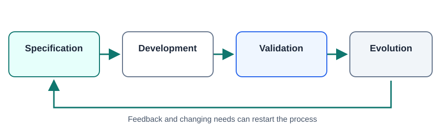

CSD341 · COURSE OVERVIEW
Software Engineering Course
Welcome to the CSD341 course hub. This mini-site organizes the topics in the seven supplied Software Engineering lecture files, from software fundamentals and development processes to Agile practices and requirements engineering.
About the Course
Software engineering is concerned with the theories, methods, and tools used in professional software development. It covers the whole production process, from early system specification through development and maintenance after delivery.
The course emphasizes disciplined development, software quality, and Agile design methods. It introduces the activities and models teams use to understand a problem, plan a solution, build it, check it, and respond to changing needs.
Writing code is only one part of software engineering: a dependable product also needs clear requirements, suitable design, validation, and ongoing evolution.
Course Information
| Information | Details |
|---|---|
| Course code | CSD341 |
| Prerequisite | ISD104 |
| Credit hours | 3 |
| Lecture hours |
Assessment Distribution
| Assessment | Percentage |
|---|---|
| Final examination | 50% |
| Practical examination | 20% |
| Mid-term examination | 10% |
| Course activities | 15% |
| Oral examination | 5% |
Course details and assessment percentages are transcribed from the course information slide and should be confirmed against current instructor announcements.
Learning Outcomes
After studying the supplied course material, students should be able to:
-
Knowledge and Understanding
- Explain software engineering and distinguish generic software products from customized products.
- Recognize software quality attributes such as maintainability, efficiency, correctness, reusability, portability, reliability, and availability.
- Describe software process activities and compare plan-driven, Agile, and hybrid approaches.
- Summarize the Waterfall, V-Model, Incremental, Spiral, and Reuse-Oriented models.
-
Practical Skills
- Explain XP, Kanban, and Scrum practices introduced in the lectures.
- Identify how Agile tools such as Jira, Azure DevOps, and Trello support team workflow.
- Classify functional and non-functional requirements and describe how requirements are elicited, specified, and validated.
- Write a clear user story that identifies an actor, a goal, and its benefit.
Course Content
The first lecture lists the following seven course areas. The supplied files provide detailed material for the first six areas and for requirements engineering; a separate Software Testing lecture was not included in the uploaded set.
- Introduction to Software Engineering
- Software Processes
- Software Process Models
- Agile Methodologies
- Agile Tools
- Requirements Engineering Process
- Software Testing — listed in the course outline; separate lecture notes were not supplied
A Software Process at a Glance

These activities provide a useful high-level view of software development. The exact workflow may be linear, iterative, evolutionary, or parallel, depending on the project and its constraints.
Key Course Terms
- Software product
- A software system together with its associated documentation. Products may be generic or customized for a particular customer.
- Software process
- A structured set of activities required to develop and maintain a software system.
- Functional requirement
- A statement describing a service the system should provide or how it should respond to an input or situation.
- Non-functional requirement
- A statement describing a system property or constraint, such as reliability, response time, or storage requirements.
- Sprint
- A fixed-length Scrum development cycle in which the team works toward a selected increment.
- WIP limit
- A Kanban limit on the number of tasks allowed in progress at the same time.
- RE
- The process of discovering, analyzing, documenting, and checking system requirements.
Learning Resources
- View the course teaching and student-support information.
- Explore the seven-lecture topic and activity schedule.
- Request a place in a course workshop or practical session.
- Return to the course learning outcomes.
- Read the official Scrum Guide (opens in a new tab).
- Read the Agile Manifesto (opens in a new tab).
- Download the Software Engineering lecture topic outline (TXT).
- Email the sample CSD341 course contact (illustrative address).
The supplied lecture material identifies Software Engineering 1 as the course lecture series. External resources are provided as optional further reading, not as replacements for the instructor's slides.